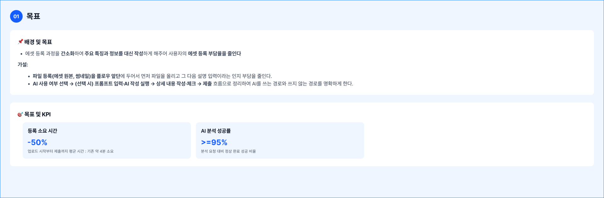
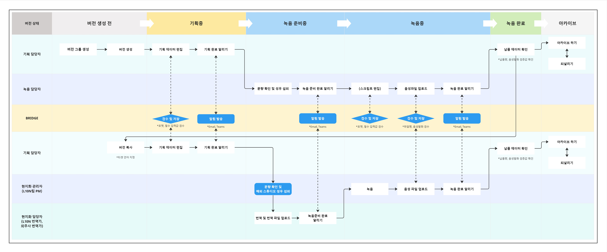
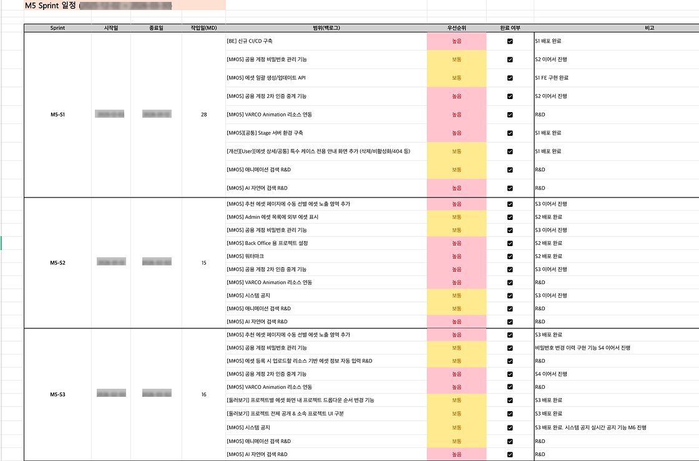
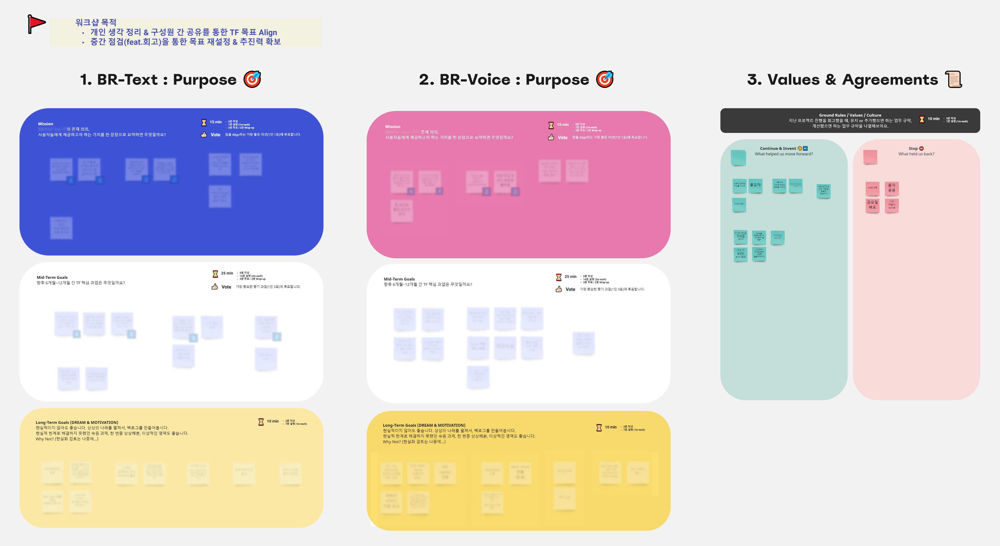

01
사내 디지털 리소스 통합 관리 플랫폼
팀 6명 (기획 1 / FE 2 / BE 2 / 서버 1 / 디자인 1)
대상 약 700명
협업 2개 조직
복잡한 조직의 문제를 단순한 구조로 풀어내고, 데이터와 사용자 관점에 기반한 의사결정으로 조직 전체의 업무 효율을 높이는 PM을 지향합니다.
경력
전사인프라본부 게임개발인프라지원실 | 서비스기획
학력 | 자격
Indiana University Bloomington
컴퓨터정보학과 (부전공: 경영학) | GPA 3.59 / 4.0
2014.08 — 2019.05
Prince2 Foundation
APMG | 2022.07 취득
스킬
도구
데이터 분석
사이드 프로젝트
문제 정의와 요구사항을 PRD로 구조화하고, 이해관계자와 스코프를 합의한 뒤 기획을 시작합니다.

전사 공통 워크플로우를 설계하고 운영 체계를 구축하여 조직 간 일관된 프로세스를 정착시킵니다.

마일스톤/스프린트 단위로 일정을 수립하고, 사내 일감 관리 도구를 기반으로 진행 상황과 우선순위를 관리합니다.

릴리즈 후 정량/정성 데이터를 기반으로 회고하고, 개선점을 다음 스프린트에 반영합니다.

개발, 디자인, AI, 운영 등 다부서 간 요구사항을 조율하고 의사결정 구조를 수립합니다.